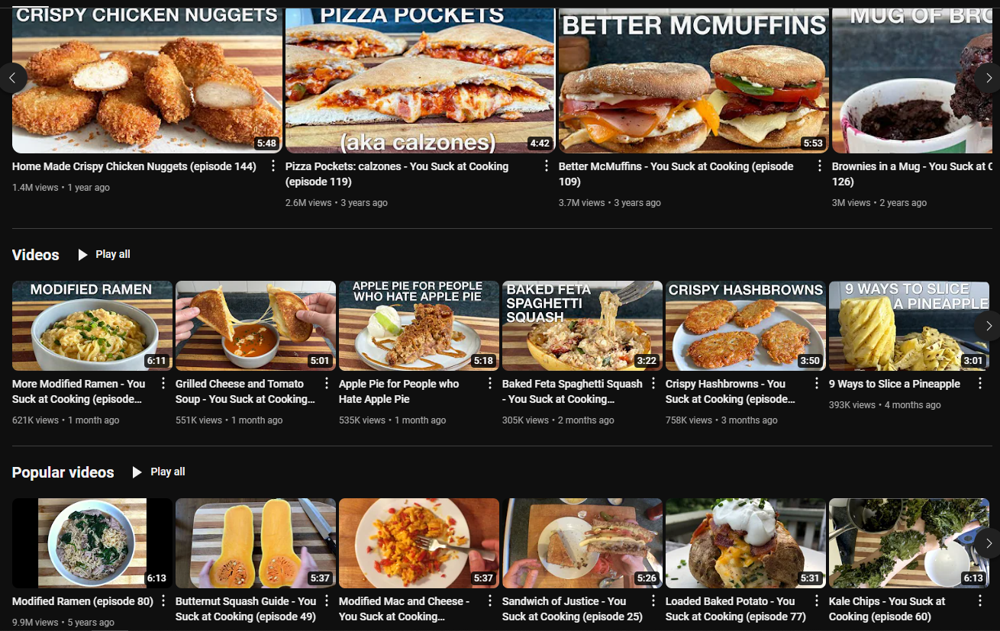

"Ji" is derived from "智 - Wisdom" and "A" is derived from "雅 - Clear".
I am a fourth year Art major at CTSA.
As a resident of VDCN, I sometimes get lucky and spot raccoons, rats, and rabbits hanging out around the area! Super cute. I love the wildlife!
I enjoy cooking with my roommates, spending time with my friends, and making art at the studios on-campus.
After I started living on-campus, I began meal-prepping and making food at home more often.
I learned a lot from this one Youtuber and grew up watching their videos!
Go on and CLICK the button below to check out one of my biggest motivations for cooking. :)

I really enjoy doing these things!
I. Drawing with my friends
II. Cooking something new
III. Visiting a claw machine arcade
Some cool things that I want to share include...
I. The three-act play titled "Our Town" by Thornton Wilder
II. Works by the 17th-century Italian Baroque painter Artemisia Gentileschi
III. I recently tried cooking Bossam at home! Bossam is a pork dish in Korean cuisine usually served with cabbage wraps